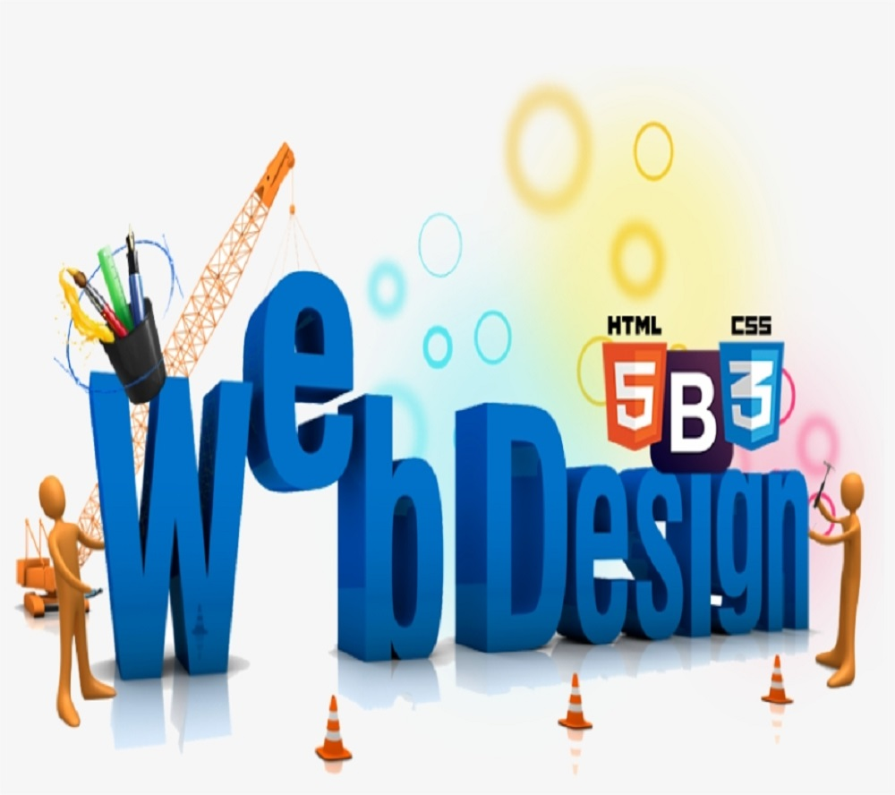

.jpg)
.jpg)
ebenezer kwame egyir 0721000118
about me

Hello, I am Ebenezer Egyir, a student at Takoradi Technical University, studying IT at the level 200.
I reside in Mempeasem, Cape Coast district.
I am of medium height and enjoy good health.
In my family, there are five members, and I am the eldest.
My father works as a teacher, while my mother is a trader. I hold deep affection for my family.
courses Offering
To view more about the courses use the mouse to hover on it or tap if your devise is andriod.
-

-

-
-
-
semester calendar
Mid-Semester exam
end-of-Mid-Semester exam
begin-of-end of semester exam
end-end-of semester exam
Vacation
testimonial
I am Joel Hagan, a Snr IT Assistant at the Takoradi Technical University - Directorate of ICT. I have know Eben for a while now and I am truly grateful for having crossed paths with such a hardworking young man. Eben has been a great inspiration to me because his zeal to accomplish what he sets his mind unto has clearly depicted his limitless potential to succeed in life. As a young web developer, he has demonstrated his ability and passion by performing excellently in his school projects and other extra curricular assignments. Moreover, his interpersonal skills and sociable attitude is very impressive and due to this he is admired by all his lecturers and colleagues.
Ebenezer came back to his former institution from August, 2022 to October, 2022 for a compulsory and supervised industrial attachment as part of the fulfilment for the award of HND in Information Technology. During that period in the school, he served in both the classroom and at the administration. He excelled in time management, self-motivation and problem-solving in both the classroom and administrative roles. As an in-service student, his communication skills with the students, staff and other guests were top notch. Even though Master Ebenezer Egyir is a physically challenged individual, it does not negatively impact on his work at all. He coaches and works tirelessly with or without supervision. I therefore attest to that fact that Ebenezer Egyir would be a valuable asset to any organization he finds himself.
It was my great pleasure to personally worked with Egyir Ebenezer as an attachment personnel for one semester in Efutu Senior High Technical School. During Egyir Ebenezers time in the school, I had an experienced with an individual who shows up earlier than asked, works hard, carries himself in a polite and respectable manner. Your cooperation is anticipated